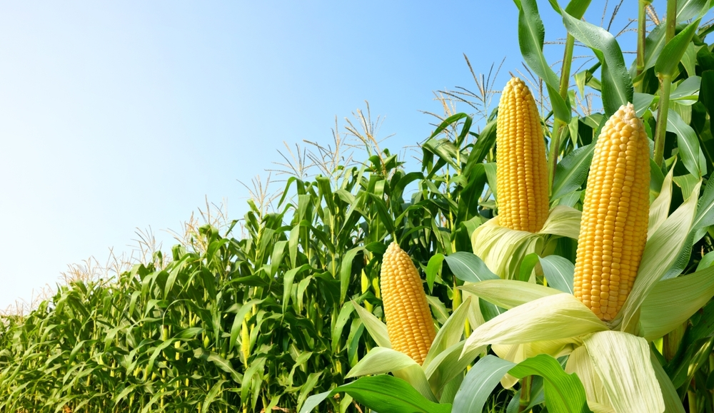

O milho é uma planta que cresce nas fazendas, onde os agricultores cuidam do cultivo para produzir alimentos, rações e até ingredientes para diversos produtos. Mas o mais legal é que o milho que é colhido no campo chega até as cidades, sendo consumido na nossa alimentação, em produtos industrializados, alimentos processados e até na alimentação de animais que também estão na cidade. Assim, o milho funciona como uma ponte entre o campo e a cidade, mostrando como a produção agrícola é fundamental para abastecer e sustentar o nosso dia a dia urbano!
